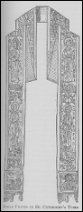

|
| A B C D E F G H I J K L M N O P Q R S T U V W X Y Z |
A liturgical vestment composed of a strip of material from two to four inches wide and about eighty inches long. It has either a uniform width throughout, or is somewhat narrower towards the middle, widening at the ends in the shape of a trapezium or spade. A small cross is generally sewed or embroidered on the stole at both ends and in the middle; the cross, however, is prescribed only for the middle, where the priest kisses the stole before putting it on. There are no express precepts concerning the material of the stole, but silk, or at least a half-silk fabric, is most appropriate. Stoles for festivals are generally ornamented with embroidery, especially what are called vesper stoles".
The stole is worn only by deacons, priests, and bishops. For deacons and priests it is the specific mark of office, being the badge of the diaconal and priestly orders. The wrongful use of the stole by subdeacons, therefore, would imply the usurpation of a higher order, and would constitute an irregularity. Deacons wear the stole like a sash, the vestment resting on the left shoulder and thence passing across the breast and back to the right side. The stole of the priest extends from the back of the neck across the shoulders to the breast, where the two halves either cross each other or fall down straight according as the stole is worn over the alb or the surplice. The stole is worn by a bishop in the same manner as a priest, except that it is never crossed on the breast, as a bishop wears the pectoral cross. As a mark of order the stole is used in a special ceremony, at the ordination of deacons and priests. At the ordination of deacons the bishop places it on the left shoulder of the candidate, saying: "Receive from the hand of God the white garment and fulfil thy duty, for God is mighty enough to give thee His grace in rich measure." At the ordination of priests the bishop draws the part of the stole that rests at the back of the candidate's neck forward over the breast and lays the two ends crosswise, saying: "Receive the yoke of the Lord, for His yoke is sweet and His burden is light." The Sacred Congregation of Rites has given a large number of decisions concerning the use of the stole. As a general rule it may be stated: the stole is only used, and must be used, at a function peculiar to the deacon, priest, and bishop, a function that presupposes the order (e.g., at the celebration of Mass, when the Blessed Sacrament is touched, when the sacraments are administered), but not for example, in processions or at Vespers. The wearing of the stole by the bishop at Solemn Vespers is an exception; its use by a priest while preaching depends on local custom. The stole is not a specific mark of parochial jurisdiction. The use of the stole is also customary in the Oriental rites, in which, as in the West, it is one of the chief liturgical vestments (Greek, 6pdpiov, the deacon's stole, and irrpaXXtop, the priest's stole; Armenian, urar; Syrian and Chaldaic, uroro; Coptic, batrashil). According to present Oriental custom the stole is a strip of silk about seven or eight inches wide, having at the upper end a hole through which the head is inserted; it is either undivided (Syrian, Coptic, and Armenian custom) or opens down the front from the opening for the head (Greek custom). Among the Chaldeans (Nestorians) the stole of the priest resembles that used in the West, and is, like this, crossed over the breast. The deacon's stole generally hangs down straight from the left shoulder both in front and at the back, but in certain rites is first wound like a sash around the breast and back. Among the Syrians and Chaldeans the subdeacon also uses the stole, but he first twists it like a scarf around the neck, the ends being then let hang from the left shoulder in front and behind.
We possess few references to the stole anterior to the ninth century. In the East, however, it is mentioned very early, the deacon's stole being frequently referred to even in the fourth and fifth centuries. The priest's stole is not mentioned in the East until the eighth century. The stole is first mentioned in the West in the sixth and seventh centuries (Synod of Braga, 563; Fourth Council of Toledo, 633; Gallican explanation of the Mass), but then as a thing which had long been in use. The earliest evidences of the use of the stole at Rome date from the second half of the eighth century and the beginning of the ninth. But in the ninth century, subdeacons and acolytes still wore both the planeta and the stole, although, to distinguish them from the deacons, priests, and bishops, there were definite limitations to their use of the latter vestment. After the ninth century the stole is very frequently mentioned, and even then the manner of its use was essentially the same as today. In the ninth and tenth centuries in the Frankish Empire the priests were commanded to wear the stole constantly as a badge of their calling, especially when on a journey. In Spain and Gaul in the pre-Carlovingian period, the deacons wore the stole over the tunic like the Greeks; in Southern Italy this practice was continued until at least the thirteenth century; at Milan the stole is still worn over the dalmatic. The custom for the priests to wear the stole crossed in front of the breast at Mass was known as early as the Synod of Braga (675), but did not become general until the late Middle Ages.
Very little is known concerning the nature of the stole in the pre-Carlovingian period. Originally it was probably a cloth folded into the form of a band, and gradually developed into a simple band. In the eleventh and twelfth centuries the stole was very long, and at the same time extremely narrow. It was customary, even in the ninth century, to ornament the ends with fringe, tassels, or little bells. Towards the thirteenth century the ends came to be trapezium-shaped; in the fourteenth century this shape disappeared, and until the sixteenth century the stole was a strip of material of uniform width, and only ornamented with fringe at the ends. During the course of the sixteenth century it began again to be customary to broaden the ends of the stole; the eighteenth century produced the ugly stoles, in which the ends seemed to spread out into huge spades; these were also called "pocket stoles". It was not until the sixteenth century that it became customary to place a cross in the centre and at the ends of the stole; in the Middle Ages this practice was unusual.
Various hypotheses have been suggested concerning the origin of the stole. The theory formerly universally held, but quite wrong, that it originated in the ornamental trimming of a garment called "stole", which in the course of time disappeared leaving behind only this trimming, has been abandoned. The theory that traced the stole to the Jewish praying mantle has also been given up. At the present time the stole is either traced back to a liturgical napkin, which deacons are said to have carried, or to a neckcloth formerly peculiar to priests or it is regarded as a liturgical badge (introduced at the latest in the fourth century) which first came into use in the East, and then in the West. It was also brought, as it would seem, to Rome, where it was not at first adopted as a badge of the higher orders of the clergy, but as a distinctive mark of the Roman clergy in general. The giving of the stole to the candidate at ordination in Rome was intended to convey a double symbolism; first, that the elevation to the clergy of the Roman Church occurred de benedictione S. Petri, and secondly that by ordination the candidate entered the service of St. Peter, that is of the Roman Church. It was also customary before the ordination to lay the oraria upon the Confessio of St. Peter. This liturgical badge was called orarium on account of its similarity to the secular orarium both in shape and material, and in the way it was worn. (For further details as to the various hypotheses concerning the origin of the name, cf. J. Braun, "Die liturgische Gewandung", 608-20.) The name "stole", as the designation of the orarium, is of Gallic origin, not Roman. As early as the ninth century the expression "stole" prevailed in the Frankish Empire; it made its entrance into Italy about the tenth century, and here also came rapidly into general use. From the thirteenth century the name orarium appears only in isolated instances.
Bock, Gesch. der liturgischen Gewander, 11 (Bonn, 1866); Rohault DE FLEURY, La Messe, VII (Paris, 1889); MARRIOTT, Vestiarium christianum (London, 1868); Wilpert, Un capitoto delta storia del vestiario (Rome, 1898-99); Idem, Die Gewandung der ersten Christen (Cologne, 1898); BRAUN, Die priesterl. Gewander des Abendlandes (Freiburg, 1898); IDEM, Die liturgische Gewandung im Occident u. Orient.
Illustration above: Stole found in St. Cuthbert's Tomb.
APA citation. (1912). Stole. In The Catholic Encyclopedia. New York: Robert Appleton Company. Retrieved April 26, 2010 from New Advent: http://www.newadvent.org/cathen/14301a.htm
MLA citation. "Stole." The Catholic Encyclopedia. Vol. 14. New York: Robert Appleton Company, 1912. 26 Apr. 2010 <http://www.newadvent.org/cathen/14301a.htm>.
Transcription. This article was transcribed for New Advent by Ian Rutherford.
Ecclesiastical approbation. Nihil Obstat. July 1, 1912. Remy Lafort, S.T.D., Censor. Imprimatur. +John Cardinal Farley, Archbishop of New York.
Contact information. The editor of New Advent is Kevin Knight. My email address is webmaster at newadvent.org. (To help fight spam, this address might change occasionally.) Regrettably, I can't reply to every letter, but I greatly appreciate your feedback — especially notifications about typographical errors and inappropriate ads.